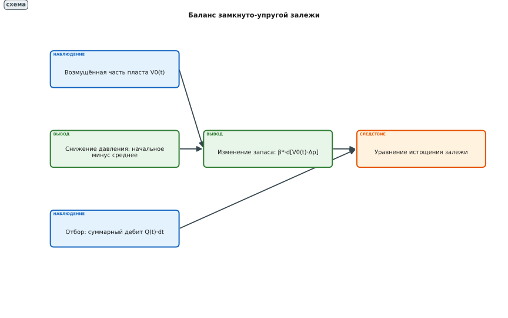

Путь › Что движет жидкость и как это описать › Шаг 6 из 60
Как отбор меняет упругий запас
В книге: «Подсчет упругого запаса жидкости в пласте» стр. 476–477
Опирается на: шаг 2 «Есть ли у пласта подпитка водой» (предпосылка), шаг 4 «Что такое упругий запас» (предпосылка), шаг 5 «Один коэффициент для жидкости и пласта» (предпосылка)
Суть
Отобранный объём нефти равен изменению упругого запаса в возмущённой части пласта.
Из этого баланса автор получает уравнение истощения замкнуто-упругой залежи.
Баланс нужен для приближённых решений дальше в главе.
Пороговая идея. Баланс связывает суммарный дебит не с давлением одной скважины, а с объемом возмущенной области и ее средним давлением. модель
Как это работает
Что считаем
Для замкнуто-упругой залежи берут не весь пласт. Берут объём, вовлечённый в перераспределение давления к данному моменту. Это возмущённая часть пласта. стр. 476
«в условиях замкнуто-упругого режима нефтяному месторождению, то под $V_0$ следует понимать объем пласта»

Снижение давления считают от начального давления. Вычитают средневзвешенное давление — среднее по объёму возмущённой части. стр. 477
«где $p_\kappa$ – начальное пластовое давление; $\bar{p}$ – средневзвешенное по объему возмущенной части пласта $V_0$ давление.»
Для такого среднего нужно знать две вещи. Геометрию возмущённой части и распределение давления в ней. стр. 477
«Вычислить средневзвешенное пластовое давление $\bar{p}$ можно, если известна геометрия возмущенной части пласта и конкретное распределение давления в ней.»
Баланс
Автор приравнивает малое изменение запаса к объёму нефти, отобранному за то же время. Это вывод из сохранения объёма. стр. 477
«С другой стороны, изменение упругого запаса жидкости в пласте за время $dt$, равное объему отобранной из пласта нефти, дается выражением»
В баланс входит суммарный дебит всех скважин залежи. Не дебит одной скважины. стр. 477
«где $Q(t)$ – дебит всех скважин, эксплуатирующих данную нефтяную залежь.»
Два выражения для изменения запаса приравнивают. Получается дифференциальное уравнение истощения замкнуто-упругой залежи. стр. 477
«Приравняв правые части двух последних равенств, получим дифференциальное уравнение истощения нефтяной залежи в условиях замкнуто-упругого режима»
Зачем это нужно
Автор использует этот баланс далее. На нём строятся приближённые решения. стр. 477
«Полученное соотношение далее будет использоваться при построении приближенных решений теории упругого режима.»
Важны оба множителя: охваченный объём и снижение давления. Даже если среднее давление меняется слабо, рост охваченного объёма меняет запас. стр. 477
По шагам
Как составить баланс
- Определите геометрию возмущённой области и среднее давление в ней. стр. 476–477
- Вычтите среднее давление из начального. стр. 477
- Приравняйте изменение запаса объёму нефти, отобранному за малое время. стр. 477
Формулы
Положительное снижение давления относительно начального. стр. 477
| Обозначение | Что это | Единицы |
|---|---|---|
| $\Delta\!p$ | изменение давления; в модели истощения — снижение от начального до среднего | Па |
| $p_\kappa$ | начальное пластовое давление | Па |
| $\bar{p}$ | средневзвешенное по возмущенному объему давление | Па |
Дифференциал упругого запаса через изменение объема и снижения давления. стр. 477
| Обозначение | Что это | Единицы |
|---|---|---|
| $\Delta\!V_{\text{з}}$ | изменение упругого запаса | м³ |
| $\beta^*$ | упругоемкость пласта | Па⁻¹ |
| $V_0$ | объем рассматриваемой части пласта | м³ |
| $t$ | время | с |
| $\Delta\!p$ | изменение давления; в модели истощения — снижение от начального до среднего | Па |
Тот же дифференциал через суммарный отбор. стр. 477
| Обозначение | Что это | Единицы |
|---|---|---|
| $\Delta\!V_{\text{з}}$ | изменение упругого запаса | м³ |
| $Q(t)$ | суммарный дебит скважин | м³/с |
| $dt$ | малый промежуток времени | с |
Дифференциальный баланс для замкнуто-упругого истощения. стр. 477
| Обозначение | Что это | Единицы |
|---|---|---|
| $\beta^*$ | упругоемкость пласта | Па⁻¹ |
| $V_0$ | объем рассматриваемой части пласта | м³ |
| $t$ | время | с |
| $\Delta\!p$ | изменение давления; в модели истощения — снижение от начального до среднего | Па |
| $Q(t)$ | суммарный дебит скважин | м³/с |
| $dt$ | малый промежуток времени | с |
Что это значит для данных
Одно локальное давление не заменяет среднее по объему; дебит суммируют по всем скважинам этой залежи.
- Вход
- Геометрия и поле давления, начальное давление, дебиты скважин, упругоемкость.
- Выход
- Баланс истощения замкнуто-упругой залежи.
- Где ломается
- При отсутствии геометрии и распределения давления объемное среднее из этих данных не вычислить.
Где здесь ручной труд специалиста
- Входные данные
- Геометрия, модель давления и журнал добычи.
- Ручные шаги
- Согласовать область усреднения давления с интервалами учета добычи.
- Точки суждения
- Установить границу возмущенной области и проверить замкнутость режима.
- Время
- Зависит от восстановления поля давления.
- Типичные ошибки
- Усреднять замеры скважин без весов и использовать дебит одной скважины.
Аналогия модель
Баланс равен сверке разницы остатка с расходом по всем каналам.
Где аналогия перестаёт работать: Возмущенная область и среднее давление обе меняются вместе со временем.
Глубже
Важны оба множителя модель
Даже если выбранное среднее меняется слабо, изменение самого охваченного объема влияет на изменение запаса.
Новые понятия
- возмущенная часть пласта
- Объем пласта, охваченный изменением давления к данному моменту. стр. 476
- средневзвешенное давление
- Среднее давление с весами по объему возмущенной части пласта. стр. 476
- дебит
- Объем отбора за единицу времени. модель
- дифференцирование
- Нахождение малого изменения выражения или его темпа изменения. модель
- упругоемкость
- Изменение запаса на единицу объема пласта и на единицу изменения давления. модель
Проверь себя
Верный ответ: Суммарный дебит всех скважин залежи
Автор включает в баланс суммарный дебит всех скважин данной залежи. Где это в тексте (стр. 477) →
Верный ответ: Геометрию возмущённой части; Распределение давления в ней
По тексту нужны геометрия возмущённой части и распределение давления в ней. Где это в тексте (стр. 477) →
Источник
Все утверждения шага с дословной цитатой автора и страницей книги (по PDF).
Для замкнуто-упругой залежи берут объем, вовлеченный в перераспределение давления к данному моменту. допущение
«в условиях замкнуто-упругого режима нефтяному месторождению, то под $V_0$ следует понимать объем пласта»
Снижение давления рассчитывают относительно начального давления по объемному среднему в возмущенной части. допущение
«где $p_\kappa$ – начальное пластовое давление; $\bar{p}$ – средневзвешенное по объему возмущенной части пласта $V_0$ давление.»
Для объемного среднего нужны и геометрия возмущенной части, и распределение давления в ней. допущение
«Вычислить средневзвешенное пластовое давление $\bar{p}$ можно, если известна геометрия возмущенной части пласта и конкретное распределение давления в ней.»
Малое изменение запаса равно объему нефти, отобранному за тот же промежуток времени. вывод
«С другой стороны, изменение упругого запаса жидкости в пласте за время $dt$, равное объему отобранной из пласта нефти, дается выражением»
В баланс входит суммарный дебит всех скважин данной залежи. наблюдение
«где $Q(t)$ – дебит всех скважин, эксплуатирующих данную нефтяную залежь.»
Приравнивание двух выражений для изменения запаса дает дифференциальное уравнение истощения замкнуто-упругой залежи. вывод
«Приравняв правые части двух последних равенств, получим дифференциальное уравнение истощения нефтяной залежи в условиях замкнуто-упругого режима»
Автор использует этот баланс далее для построения приближенных решений. наблюдение
«Полученное соотношение далее будет использоваться при построении приближенных решений теории упругого режима.»
На этот шаг опираются: шаг 18 «Как меняются частные производные», шаг 46 «Где проходит условный фронт давления», шаг 48 «Отбор равен убыли упругого запаса», шаг 55 «Средняя депрессия в кольце вокруг скважины».